Comando que inicia um repositório que irá guardar o projeto á ser trabalhado. Deve ser usado no começo de cada projeto.
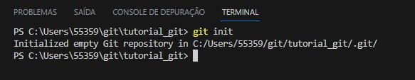
Clone
Clona um repositório já existente, incluindo os arquivos, o histórico de commits e branches. É o modo mais regular de se obter uma cópia de trabalho de um repositório central.
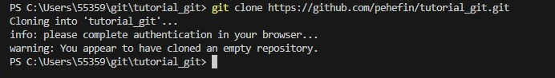
Branch
Pode criar, excluir, renomear e listar branches. Também é possível criar diferentes branches de desenvolvimento para que convirjam no mesmo repositório.
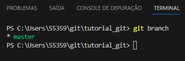
Checkout
Caso seja usado seguido de um nome de arquivo, irá descartar todas as mudanças feitas. Porém se usar o nome de um branch, ele navega pelo mesmo branch citado.
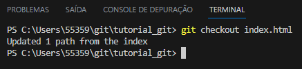
Status
Verifica se foram feitas alterações no branch atual que ainda não foram adicionadas ao versionamento.
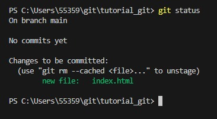
Diff
É um comando usado para detectar as diferenças entre arquivos ou versões do projeto..
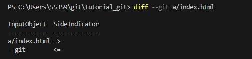
Add
Adiciona arquivos novos e alterações de arquivos antigos ao versionamento. demais, ele move as alterações do diretório de trabalho para a área de staging, permitindo a preparação de um snapshot antes de realizar o commit ao histórico oficial.
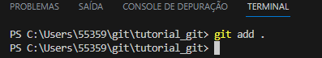
Commit
Salva as alterações de código que ainda não estão no versionamento. Se usado com o "-a" ele comita todas as mudanças. Se usado com "-m" ele adiciona uma mensagem definida pelo usuário. É importante para guiar algum programador que não sabe que alterações foram feitas.
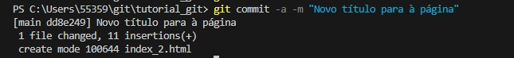
Push
Adiciona arquivos do repositório Local para o remoto. Apesar de semelhante ao svn commit, ele difere ao adicionar uma série de commits ao invés de apenas um conjunto de alterações.
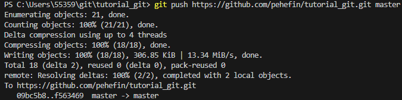
Pull
Faz o download de ramificação de um repositório remoto e faz a mesclagem imediata na ramificação atual.
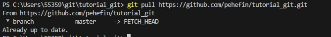
Revert
Desfaz um commit. Caso identifique um commit com falhas, é a maneira mais fácil e segura de remover a base de código.
Merge
Faz a união de dois branches em um único só, o usuário deve estar no branch que será mantido.
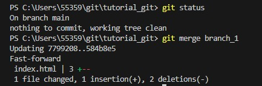
Stash
Arquiva as alterações que o usuário fez na cópia de trabalho mas não salva no commit.
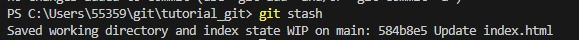
Rm
É usado para remover arquivos da pasta do projeto. Também é possível remover arquivos do índice de staging e do diretório de trabalho. Porém, só será realizada a remoção caso os arquivos operadores sejam idênticos aos arquivos no Head atual.
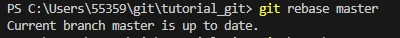
Config
Define opções de configuração para a instalação do Git.
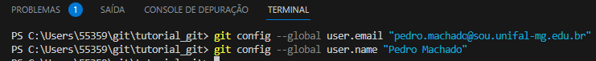
Reset
Desfaz as alterações ainda não enviadas para o repositório remoto.
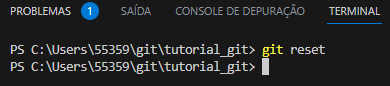
Remote
Permite gerenciar as conexões do seu repositório atual, com outros repositórios. Pode-se usar com o comando -v para incluir o URL de cada conexão.
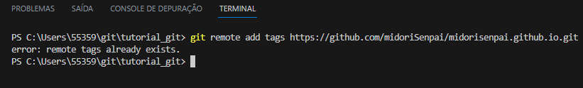
Fetch
É usado para baixar conteúdos do repositório remoto, caso o usuário tenha feito o upload de um arquivo diretamente no remoto, e queira traze-lo para o local.
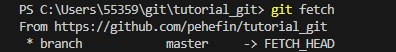
Show
Usado para exibir informações sobre objetos git. Dentre as informações mostradas pelo comando estão as tags e os commits.
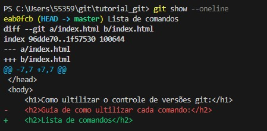
Help
Exibe um guia dos comandos mais ultilizados no git, e o que cada um faz. Basta colocar o nome do comando que deseja após o "help".
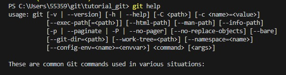
Rebase
Realoca os commits por cima de uma base na "tree" das branches. Também ajuda a evitar commits de merge desnecessários.
Blame
Usado para monitorar as alterações do arquivo e o autor delas, inclusive mostrando a hora de cada alteração.
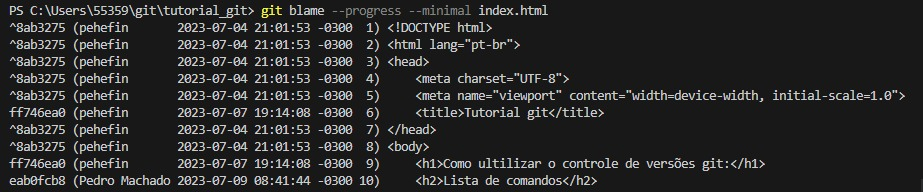
Tag
É usado para criar um marcador no histórico de versões do arquivo. Pode ser muito útil caso queira marcar um commit específico no código.
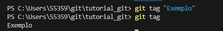